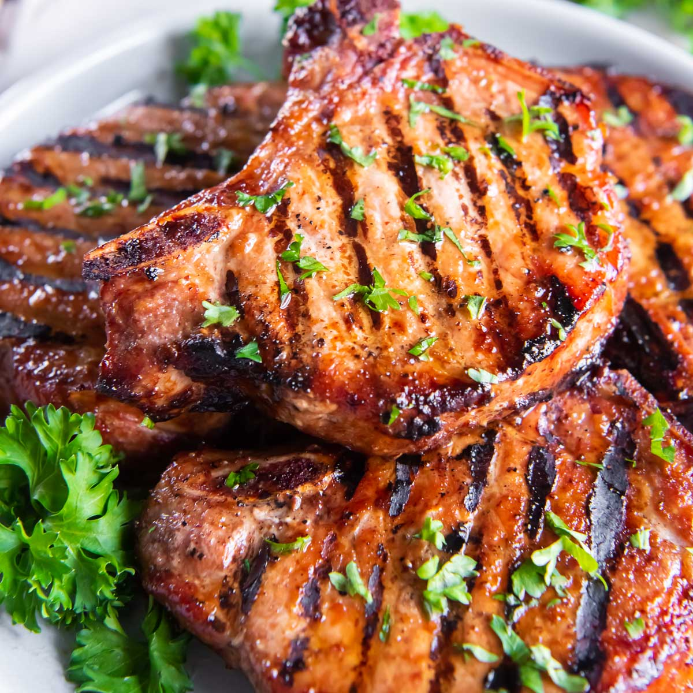

Prep: 5 Mins.
Cook: 10 mins
Total: 15 mins
Servings: 4
Pork Chops
Ingredients
- 4 bone-in pork chops
- Kosher salt and fresh black pepper
- Seasonings of choice
- 3 tbsp neutral-tasting oil
- 4tbsp unsalted butter
- 1 bunch of sage
- 5 cloves of garlic, smashed
- juice of 1/2 lemon
Directions
Season all sides of the pork chop generously with salt and pepper. Sprinkle with more seasonings.
In a large skillet, heat the oil over medium-high heat. Once the pan is hot, add the pork chops,
working in batches if needed so there is no overcrowding. sear for 3 minutes, flip, and reduce heat to medium, cook for another 3-5 minutes.
Add the butter, sage, and garlic to the pan. Leaving the heat on medium, constantly baste the pork chops by spooning the butter over the chops.